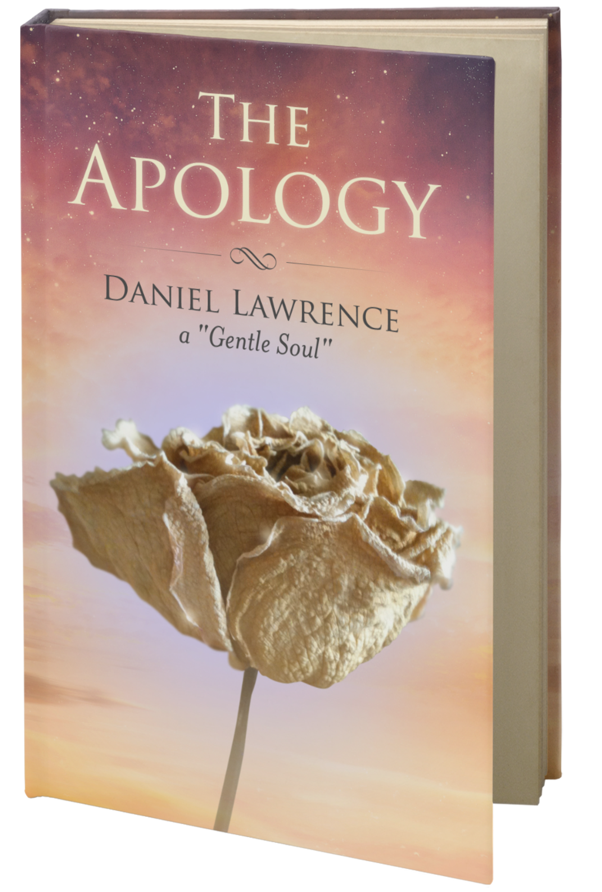

"The Apology"

I am pleased to announce the launch of my new book, “The Apology,” now available to order. As well,
I am focusing solely on distance and in-person Reiki healings for those with life-threatening illnesses,
in order to assist with energetic end-of-life preparations.
Purchase This Book
Read Reviews
"Roses at the peak of their life cycle, in all colors of the heart, were laid on top of mom’s casket. This was one of the roses I saved from that day. The flower, while long dried, still bears a ribbon of light from mom’s Spirit"

Purchase This Book
Reviews
The Apology” is a book about life’s greatest lessons, written by Daniel Lawrence, a man I’ve known for 30 years. He led a tumultuous life. The youngest of 11 siblings, he had many painful experiences as he grew up. He suffered betrayals from family members far beyond what could be expected in a normal family setting. As a sensitive, he was deeply hurt psychologically. First he couldn’t understand their behavior but through faith and his deep spiritual nature, he found answers. They were lessons he had to learn as part of his souls’ mission as an earth-bound creature. Through sheer determination to understand and overcome, he discovered two of life’s greatest lessons – unconditional love and forgiveness. In this book, you’ll share his life, struggles and his ultimate victory that has led him to pour his energies into helping others. You can learn from this book. You too can discover your mission and find the greatest truths that will spur your spiritual growth.
William Frederick, C.S.W.
Praise for "The Apology" It has been said that forgiveness is the greatest of all the virtues. Forgiveness isn’t reserved for someone who has injured you in some way, but also applies to how you treat yourself – and what you must do to heal. Just as negativity breeds negativity, positivity also breeds positivity. When one is chained to the past via anger, resentment and bitterness, the heart, mind and soul will also tarnish. This powerful message is made abundantly clear in "The Apology," where author Daniel Lawrence takes the reader on an amazing lifelong journey of forgiveness. While his experiences are personal, his message is universal and applicable to all. As Daniel so clearly illuminates, "If one chooses not to accept another’s anger, it will have nowhere to go, thus bouncing back to the sender. If all mankind could act towards each other with kindness and love, from their heart and not from their ego, there would be much more compassion and peace in the world."
Mark Anthony the Psychic Lawyer®
On “The Apology” ~ I loved this book and found life and lessons beautifully intertwined as Daniel shared his biography. He shared wonderful insight with sensitivity and adventures with a sense of humor and I kept on turning pages with delight. This book brought joy to my heart and I heartily recommend it.
Doreen G, Fulton
Daniel Lawrence’s: The Apology is a delightful read. Daniel shares his life experience in this touching memories written by the “Gentle Soul”. Daniel takes his readers through his experiences of youth and his vulnerable years as the 11th child and as he, and others throughout the book, experienced the many “big gifts and lessons” along the way. Daniel makes you feel as though you were a part of each experience he details in his writings. It is a pleasant and easy read that, at times, gives the reader much to ponder and their own “life lessons”.
Ronda L. Connor
The Apology is a story of victimhood and recovery. Like all such stories, it is a powerful metaphor for turning “Defeat into Triumph.” It is the embodiment of what Joseph Campbell, the great American mythologist, identified as the Hero’s Journey.
The Hero’s Journey is a real person-making process. It is an inner process of transformation that leads us to reclaim our authentically whole self and to finally become the person we were created to be.
Each of us is born a perfect being (even those with physical disabilities), with all of the innate elements necessary to become a fully self-actualized person; a totally unique individual with the capacity to fulfill a distinctive purpose in the world. Perhaps feeling different, or as in this story, being blocked from fulfilling a dream, and then put in a position of having limits placed on his freedom. The Hero’s Journey begins when one answers the call to leave the ordinary world; to leave our “comfort zone” and venture into new territory.
As in the classic Hero’s Journey form, Daniel experienced a “call” to embark on a journey in search of reclaiming the parts of himself that he had lost, and of learning to forgive those whom he felt had harmed him. No matter what form the call takes, it is ultimately a call for greater awareness and a greater life. Answering the call forces the emerging hero into a wilderness experience where he will be faced by challenges, and eventually forced to take an inventory of his priorities, values and himself.
If the call is denied, inertia and entropy set in. If we respond to the call, we ultimately will become seekers of Truth and of Meaning. In all initiation processes, such as the Hero’s Journey, there are three stages: separation, transition and re-integration.
In the Separation Stage of the Hero’s Journey we leave our ordinary life, the known, the secure and the illusion of safety. We often experience disorientation as we are catapulted out of our “comfort zone.” The Separation Stage takes us to the first of many crossroads. We can voluntarily step fully from an ordinary life to an extraordinary one by listening to our inner-guidance and taking the right path. A betrayal bond often emerges. Oppressive and traumatic relationships create bonds that link a victim to someone who is toxic to them. Unresolved traumas seek healing, and the unconscious mind attracts people and situations that mimic the origin of the trauma; however, so long as the urge to heal from within these relationships is unconscious we just deepen the wounds. All trauma bond relationships share these characteristics: they have incredible intensity, or importance, and there is an abuse of trust and power. These uncomfortable “gifts” from Spirit serve to awaken us, and offer opportunities to step onto the right path.
That right path takes us into the Transition Stage. This stage humbles us, and connects us to each other. We experience what is called the “night sea journey” or the “dark night of the soul.” Our deepest fears emerge from the darkest caverns within us. We face down our “dragons.” We experience letting go of our false self, we go into the layers of shame, and we go through the void into the deep well of grief connected to what we never had, or have lost. We are letting go of the old and making way for the new.
We begin to feel the power of our true and perfect self. This is a spiritual journey deeply into ourselves; on it we touch the mysteries of the universe and of God. The Transition Stage has transformed us. We are awake, and ready to return home as who we truly have always have been deep inside.
Finally, we have come to the Re-integration Stage. We receive the call to come home, to see the beauty in ordinary life and to embrace life consciously. We are ready to become fully conscious and present in our daily lives. Finally, we’re ready to “walk the mystical path with practical feet.” To live in a uniquely individual way that reflects our soul and not just our personality. We have obtained a priceless treasure and we long to share what we have learned with others, so that all may benefit. The Hero’s Journey is a life long journey and the rewards are incalculable, but it is a journey that cannot occur until we boldly take the first step.
Daniel Lawrence has made the Hero’s Journey. In his book, he shares his journey through separation, transition and re-integration.
Patrick McGinnis, PhD, LMHC
With Love
It has been an absolute privilege & pleasure to be able to share in the truths & profound wisdom of ‘The Apology’ by author Daniel Lawrence.
It shows a tremendous level of self-development & awareness in learning life’s lessons through family experiences & the pathway of his journey, how refreshing it is to read such loving insights.
His story unfolds with a step by step self-discovery which touches the heart deeply, I found it most enjoyable, entertaining & it took me on the journey with him, touching on many of my emotions too.
Then concluding with the understanding & spiritual awareness of others limitations in their own growth, the power of relationships, unconditional love, personal truths & values that life has to offer us, if we could all just listen to attain enlightenment ourselves we can change our world.
I would highly recommend that anyone who has a passion for personal development takes a little time to read this book, for its a book that can be read again & again & always find something new to learn from… a pure gift of love. Thank you Daniel for the blessing & gift of you.